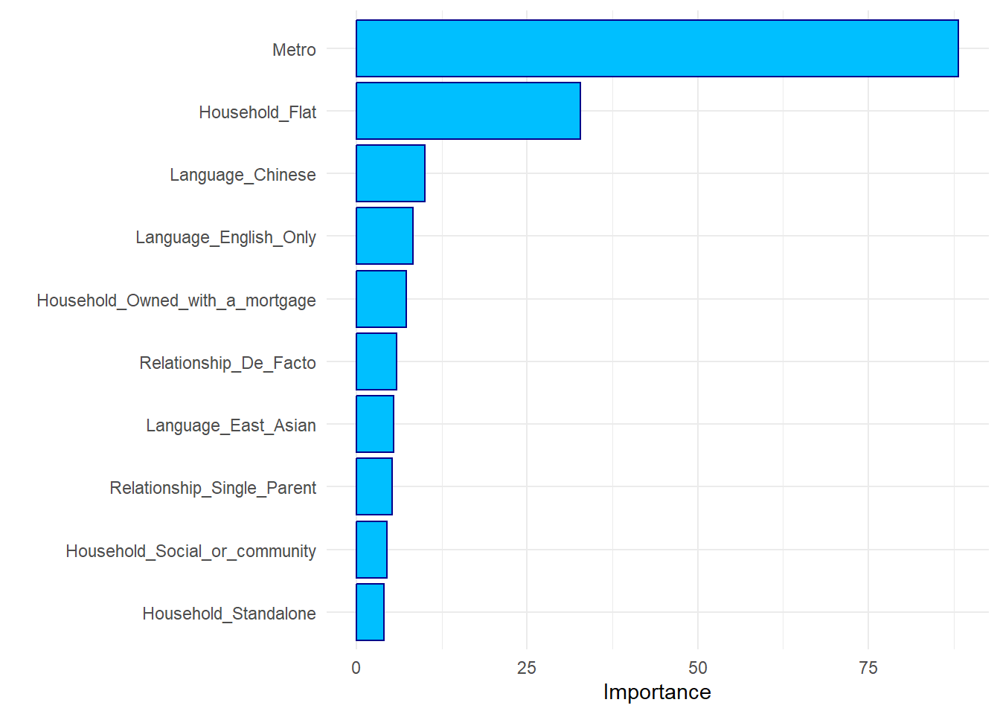
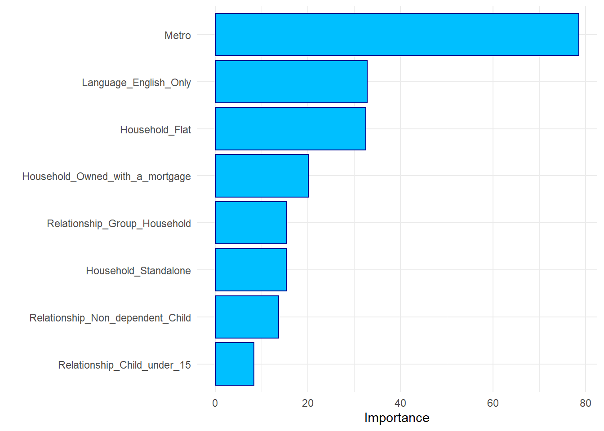

Section 4 Fitting and analysing a model
As mentioned in the previous section, this exercise requires fitting both a classification and regularised regression model.
4.1 Cluster classification
Although HDBSCAN can be used to map new data points into the existing clusters, a different approach has been taken: to “reverse engineer” the clusters by training a classification model. The intent behind this is to leverage the trained model to identify the main contributors to the classification.
Different models were tried, starting with basic tree partitioning. After a couple of trials, a random forest model was selected. The algorithm was trained with:
- Census data from 2007 to 2016 (mirroring elections between 2006 to 2016),wich was used for training and validation.
- Values for demographic attributes, which were centred around the overall percentage for said attribute, for the respective cluster.
- Clusters previously obtained with HDBSCAN, used as the response variable.
- Since the year has been “discounted”, all values will be considered as one pool. An assumption has been made that the period in question is short enough to drastically affect the clustering model. If demographic values change - cluster assignment (for instance because of re-distribution), the effect is similar to being a different electorate.
The initial fitting produces the results presented in tables ?? and ??. A variable importance plot is also presented in figure ??
| .metric | .estimate |
|---|---|
| accuracy | 0.8333333 |
| roc_auc | 0.9620648 |
| FALSE | TRUE |
|---|---|
| 0 | |
| 0.2258065 | 0.7741935 |
| 1 | |
| NA | 1.0000000 |
| 2 | |
| 0.2424242 | 0.7575758 |

From the chart above, it is possible to see that only a handful of variables significantly contribute to the cluster selection. Aiming for simplification, a random forest model with reduced variables was also trained, achieving similar results in accuracy and variable importance (shown in tables @ref(tab: ranger21) and ??, and figure ??.
| .metric | .estimate |
|---|---|
| accuracy | 0.8666667 |
| roc_auc | 0.9531230 |
| FALSE | TRUE |
|---|---|
| 0 | |
| 0.2258065 | 0.7741935 |
| 1 | |
| NA | 1.0000000 |
| 2 | |
| 0.2424242 | 0.7575758 |

Looking at variable importance, it is possible to appreciate that cluster placement can be driven by :
-Location in a large metropolitan area or the regions. -Population density, (type of household) -Life stage (relationship) -Wealth (type of household ownership) -Multicultural makeup of the area - first and second-generation migrants are more likely to be bilingual - thus the proportion of monolingual people is a proxy variable for this.
This picture fits with the media narrative about differences in the electorate (quote).
4.2 Regularised regression
Due to the large number of variables, the first step is to see if it is possible to identify which factors may be of influence. For this, a Lasso regression was conducted with the sole intent of variable selection. Then an elastic net was fitted, with the goal to optimise the root square mean error (RMSE). This process was done separately for each cluster. Although precision is not a key objective of this exercise, table ?? presents the best RMSE result per cluster, alongside the selected tuning parameters.
| cluster | alpha | lambda | RMSE_Overall | RMSE_GRN | RMSE_ALP | RMSE_COAL | RMSE_Other |
|---|---|---|---|---|---|---|---|
| 0 | 0.5416 | 0.5191 | 5.9363 | 5.7787 | 5.9668 | 7.4913 | 3.9802 |
| 1 | 0.9976 | 1.5452 | 5.9408 | 2.8817 | 6.1343 | 6.8756 | 6.9258 |
| 2 | 0.8408 | 0.5437 | 4.8961 | 1.6438 | 5.4578 | 6.0699 | 5.1531 |
However, the main objective is to understand the coefficients for each covariate, which are presented in figure 4.1.

Figure 4.1: Resulting coefficients per cluster
It is worth noticing that some of the selected covariates may not be relevant in all electorates, by account of their small absolute various or being relatively uniform across the segment. For this reason, the covariates in figure 4.1 have been ordered by their respective variance - when assessing their overall effect / relevance this must also be taken into account.
When looking at each cluster, it is possible to summarise the different demographic effects as follows:
In cluster 0 (mostly inner metropolitan areas) political divides are drawn across wealth, religiosity (i.e. values) and generational lines.
- In these areas, coalition vote is associated with higher percentages of followers of Anglican, Uniting and Presbyterian churches, people on higher income and Baby Boomers.
- Labor vote is turn driven by followers of the Catholic Church (partially a reflection of the historic association between the Australian Catholic Church and the labour movement, and Irish and Italian migration) and Millennials. There is some association between less-advantaged populations and social and community housing.
- Green vote is also driven by Millennials, but unlike Labor there is a positive association with higher income groups. Green votes are also related to the irreligiosity o secular population groups.
In cluster 1 (regional areas, including midsize cities and rural areas), demographic variance is smaller. However, when it happens, it follows a different pattern from the main cities.
- In this area, the Coalition vote has also a positive association with religiosity - this is not dissimilar to cluster 1, especially when considering that Anglicanism/Presbytiarism/Unitiarism are the largest religious groups in the area). However, a key difference with the cities is that in case higher wealth groups have a negative association with Coalition vote.
- Labor vote in these areas is driven by a larger proportion of Australian citizens and higher-income voters.
- Overall, it seems there are no demographic factors influencing Green votes in these areas.
- Interestingly, age does not rank as a variable of importance.
As expected, cluster 2 (metropolitian suburbia), shares some traits with their inner-city counterparts, showing the same associations along religious, age and wealth lines. However, there are a larger number of predictors associated with the multicultural makeup of the electorates. Those covariates tend to have a positive effect on Labor vote and a negative influence on Coalition and Green voting. This difference is interesting, especially considering inner city areas are as multicultural as the suburbs.